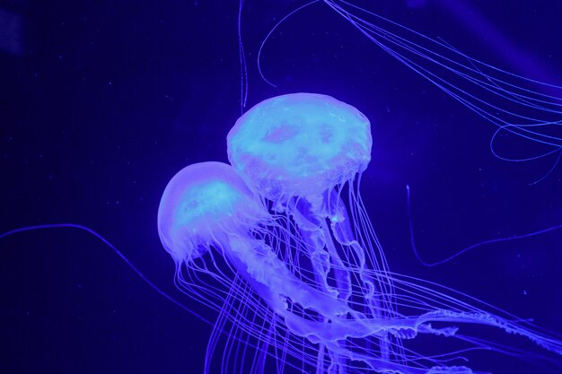
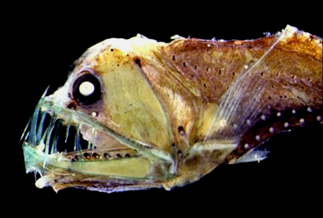
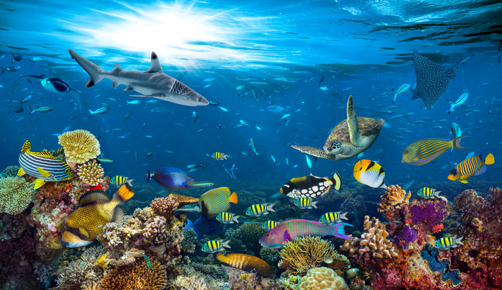
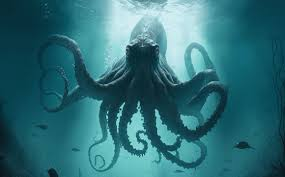
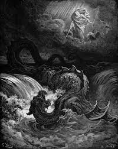

Explorez les profondeurs insondables de nos océans et plongez dans un monde fascinant de mystères marins. Ce site vous invite à découvrir les découvertes les plus récentes en océanographie, à rencontrer des espèces marines étranges et méconnues, à explorer les légendes maritimes du passé et à percer les mystères non résolus des profondeurs. Des images saisissantes, des vidéos captivantes et des liens vers des ressources supplémentaires vous immergent dans l'univers mystérieux de l'océan profond, où chaque créature et chaque légende révèle un nouveau secret de notre planète bleue.
Découvertes récentes en océanographie
Les océans, vastes et mystérieux, recèlent encore de nombreux secrets à découvrir. L'expédition océanographique, une mission audacieuse dirigée par une équipe de chercheurs passionnés, s'est fixée pour objectif d'explorer les régions les plus reculées et les profondeurs abyssales de l'océan. Armée des technologies les plus avancées en matière d'exploration marine, cette expédition promet de repousser les limites de notre compréhension de la vie sous-marine.
Découvertes fascinantes :
Au cours de cette expédition, l'équipe de chercheurs a fait des découvertes remarquables qui ont émerveillé le monde scientifique. Parmi les moments forts de l'expédition figurent la découverte de plusieurs nouvelles espèces marines, dont une méduse bioluminescente unique en son genre et une espèce de poisson abyssal jamais observée auparavant. De plus, l'équipe a identifié et cartographié des colonies de coraux profonds d'une beauté spectaculaire, témoignant de la richesse et de la diversité des écosystèmes marins cachés dans les profondeurs de l'océan.


Technologies de pointe :
Pour explorer les profondeurs inexplorées, l'expédition océanographique a utilisé une gamme de technologies de pointe. Des sous-marins télécommandés équipés de caméras haute résolution ont permis d'observer et de documenter les merveilles cachées des fonds marins, tandis que des sondes de prélèvement d'échantillons ont permis de collecter des spécimens pour des analyses approfondies en laboratoire. De plus, des capteurs de données environnementales ont fourni des informations cruciales sur les conditions physiques et chimiques de l'eau, contribuant ainsi à une meilleure compréhension des écosystèmes marins.
Impact et implications :
Les découvertes de l'expédition océanographique ont des implications profondes pour la science marine et la conservation de la biodiversité. En identifiant de nouvelles espèces et en cartographiant des habitats jusqu'à des niveaux inconnus, cette expédition enrichit notre connaissance de l'océan et souligne l'importance de protéger ces écosystèmes fragiles. De plus, les avancées technologiques réalisées lors de cette expédition ouvrent de nouvelles perspectives pour l'exploration future des profondeurs marines et la recherche scientifique en général.
L'expédition océanographique représente une étape importante dans la quête humaine pour explorer et comprendre les mystères de l'océan. Alors que nous continuons à explorer les profondeurs inexplorées, de nouvelles découvertes et aventures attendent ceux qui osent plonger dans les secrets de l'océan mystérieux.
Espèces marines étranges et méconnues
Galerie de photos mettant en valeur la diversité des formes et des couleurs des espèces marines
Pieuvre Dumbo : Un maître de la camouflage

Anatomie : La pieuvre Dumbo (Grimpoteuthis), ainsi nommée pour ses nageoires ressemblant à des oreilles de l'éléphant volant Disney, est une créature étrange et merveilleuse. Son corps mou et ses tentacules ondulants lui permettent de se faufiler habilement à travers les recoins rocheux des abysses. Sa peau peut changer de couleur et de texture pour se fondre dans son environnement, lui assurant un camouflage parfait.
Comportement : La pieuvre Dumbo est une prédatrice opportuniste, se nourrissant de petits crustacés et de poissons qui dérivent près du fond marin. Elle est également capable de nager gracieusement dans les eaux sombres grâce à ses nageoires, lui permettant d'échapper à ses prédateurs potentiels.
Habitat : On trouve la pieuvre Dumbo dans les profondeurs des océans du monde entier, où elle se cache dans les crevasses et les fissures des fonds marins. Son habitat préféré comprend les plaines abyssales et les monts sous-marins, où elle peut se fondre dans l'obscurité et chasser discrètement ses proies.
Poisson-Anguille des abysses : Un monstre des ténèbres
Anatomie : Le poisson-anguille des abysses (Melanocetus johnsonii), également connu sous le nom d'anguille des abysses, est une créature étrange et effrayante. Son corps allongé et serpentiforme est doté de dents pointues et de mâchoires extensibles, lui permettant d'avaler des proies plus grandes que lui-même. Ses yeux énormes, adaptés à la vision dans les environnements sombres, sont équipés de photophores lumineux qui attirent les proies dans ses mâchoires redoutables.
Comportement : Le poisson-anguille des abysses est un prédateur redoutable des profondeurs, chassant ses proies dans les abysses océaniques où la lumière du soleil ne pénètre jamais. Il utilise ses photophores bioluminescents pour attirer les proies dans son piège mortel, puis les capture avec ses dents acérées et sa mâchoire extensible.
Habitat : On trouve le poisson-anguille des abysses dans les eaux les plus profondes de l'océan, souvent à des profondeurs de plusieurs milliers de mètres. Il habite les plaines abyssales et les fosses océaniques, où il se cache dans l'obscurité totale et attend patiemment ses proies.
Légendes maritimes
Plongeons dans les eaux tumultueuses des légendes maritimes les plus captivantes, où les récits de monstres marins et de navires fantômes défient l'imagination depuis des siècles. Explorez avec fascination ces mystères des profondeurs, entre réalité et fiction, qui ont captivé les marins et les explorateurs à travers les âges.
Le Kraken : La légende du monstre des profondeurs

Dans les annales des récits maritimes, aucune légende n'est aussi redoutée que celle du Kraken. Ce gigantesque monstre marin, souvent décrit comme un calmar ou une pieuvre colossale, est censé surgir des profondeurs pour attaquer les navires imprudents qui naviguent trop près des côtes norvégiennes et islandaises. Les marins du passé croyaient que les tentacules du Kraken pouvaient saisir des navires entiers et les engloutir dans les abysses océaniques.
Bien que la science moderne ait tenté de rationaliser cette légende en attribuant les observations du Kraken à des calamars géants ou à des phénomènes naturels, l'image du Kraken reste ancrée dans la culture populaire et continue d'alimenter l'imaginaire collectif des amateurs de récits fantastiques.
Le fantôme du Mary Celeste : Le navire abandonné
Le Mary Celeste est un navire célèbre pour son mystère. En 1872, le navire américain Mary Celeste a été découvert flottant à la dérive dans l'Atlantique, sans aucune trace de son équipage. Les conditions du navire étaient presque intactes, mais il n'y avait personne à bord. Les raisons de cette disparition inexpliquée sont restées un mystère, alimentant des théories variées allant de l'abandon volontaire à des actes de piraterie ou même des phénomènes surnaturels.
Le Mary Celeste est devenu un symbole des mystères non résolus de l'histoire maritime et continue d'inspirer des récits d'aventures et des investigations fascinantes dans le domaine des énigmes maritimes.
Mystères océaniques non résolus
Les profondeurs des océans cachent encore des mystères non résolus qui intriguent les scientifiques et les explorateurs du monde entier. Des formations géologiques étranges aux anomalies de température, en passant par des phénomènes acoustiques inexpliqués, ces mystères océaniques continuent de défier notre compréhension des forces naturelles et de la vie marine.
Les anneaux de glace en Antarctique : Un phénomène mystérieux
Les anneaux de glace en Antarctique sont des formations circulaires de glace qui apparaissent mystérieusement sur les surfaces des océans polaires. Ces structures géométriques étranges ont été observées pour la première fois dans les années 1980 et continuent de susciter des interrogations parmi les scientifiques. Leur formation exacte reste inconnue, bien que certaines théories suggèrent qu'elles pourraient être causées par des courants marins ou des variations de température.
Les anneaux de glace suscitent un grand intérêt en raison de leur apparence inhabituelle et de leur rareté, faisant de chaque observation un événement captivant pour ceux qui étudient les environnements polaires et les processus de formation de glace.
Le Bloop : Un son mystérieux des profondeurs

Le Bloop est un son océanique mystérieux détecté pour la première fois en 1997 par des hydrophones utilisés pour surveiller les activités sismiques sous-marines. Ce bruit puissant et infrasonique, capté dans l'océan Pacifique, a été attribué à une source inconnue. Les caractéristiques du Bloop sont distinctes de celles des sons produits par des animaux marins connus ou des phénomènes naturels.
Bien que des théories aient été avancées, y compris des explications suggérant des éruptions volcaniques ou des mouvements de glace, le Bloop reste l'un des mystères acoustiques les plus intrigants des océans et continue de fasciner les chercheurs et les amateurs de phénomènes inexpliqués.